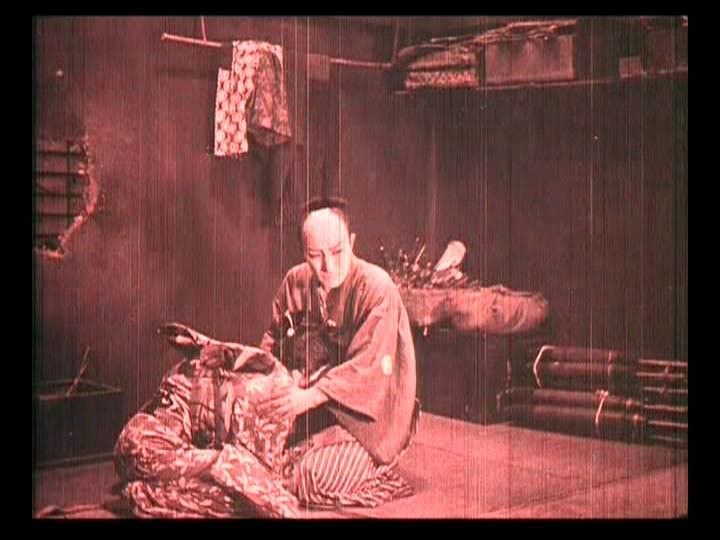
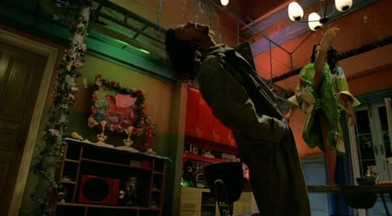

INTRO



WELCOME TO JAPANESE FILM AND NEW MEDIA

Japanese Film And New Media
JAPNS 121
Japanese Film and New Media
801304 / 801307
M 6:00 PM - 9:00 PM
T 1:00 PM - 2:15 PM
110 WARTIK
R 1:00 PM - 2:15 PM
110 WARTIK
062 Willard Bldg
Professor:
Jonathan E. Abel
Office Hours:
9-11 Tuesdays and Thursday
or by appointment
Office:
441 Burrowes Building
Tel:
814 865 2263
Teaching Assistant:
JEFF RESTA [email redacted]
OFFICE HOURS:
M, T 9-11
or by appointment
OFFICE:
447 Burrowes
email policy
Instructors will return email as quickly as possible, but will generally not respond to questions answered by the syllabus posted here.
A survey of Japanese film and new media in the twentieth century and beyond, with attention to changing cultural settings. Taught in English.
This course explores the rich variety of Japanese film and new media. As an introductory survey of Japanese film and new media the course provides a broad historical gloss of developments in the Japanese cinema from early twentieth century silent film through early twenty-first century animated films (animé). The major Japanese genres (such as contemporary drama, period drama, family films, gangster films, samurai films, school films, and disaster films) will be introduced. Students will become familiar with significant directors, stars, and studios in Japan and also learn the structural components of filmmaking in order to better understand how film makes meaning.
COURSE OBJECTIVES
To find answers to questions of difference in kind between cultures of new media and those of old media.
To understand salient features and develop basic knowledge in the following areas: Japanese film history, film aesthetics, technical aspects of the film medium, and Japanese cultural history.
To learn to interpret the popular media of Japan through sensitivity to cultural context and symbolic content while coming to understand the stakes involved in interpretation.
To refine your understanding of the relationship between art, media, and social/cultural context.
To learn to organize thoughts and express them clearly.
To learn to think critically about media’s unique role in representation.
To become a more engaged, critical spectator, reader, and interpreter of cultural products.

For those who feel like they want to print out a copy of the syllabus here is an old version. But beware! The most up-to-date information is only available on the course webpage. This pdf will not be updated.
1/3/2012